Summary
This article outlines how to integrate Privilege Secure activities with Microsoft Remote Desktop Services (RDS), for launching interactive application sessions temporary elevated privileges.
Licensing
Remote Desktop Services will run without a license for a period determined by Microsoft. For long-term use, you are required to install and set up RDS licensing based either on named users or RDS client - this is not covered in this article.
Instructions
Configure Remote Desktop Services
On the Remote Desktop Services/Terminal Services (RemoteApp) server launch Server Manager, click on the Manager tab and select Add Roles and Features.
Follow the wizard, select Remote Desktop Services installation and click Next.
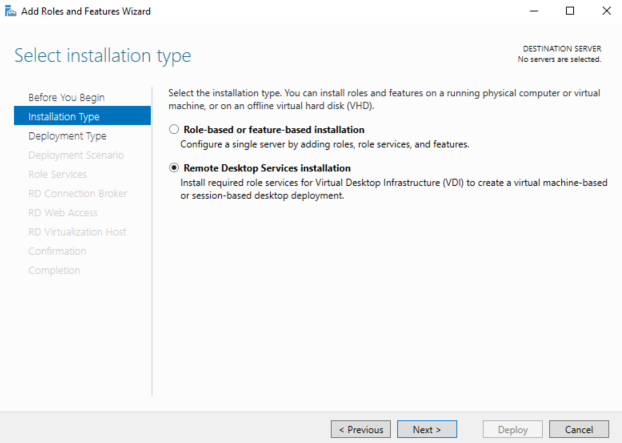
Select either Standard Deployment (as in this guide) or Quick Start if you intend to install all RDS role services on the same server. Click Next.
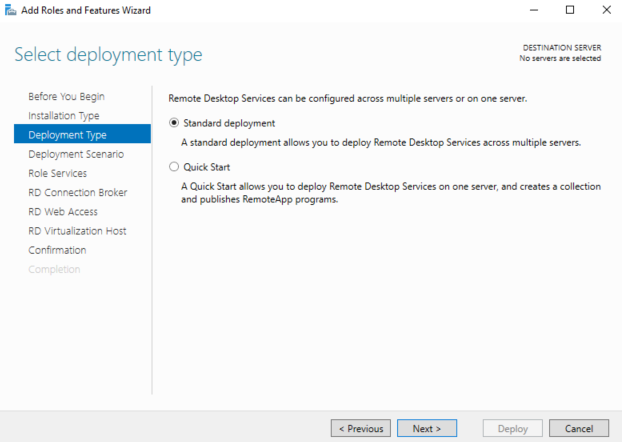
Select Session-based desktop deployment, and click Next.
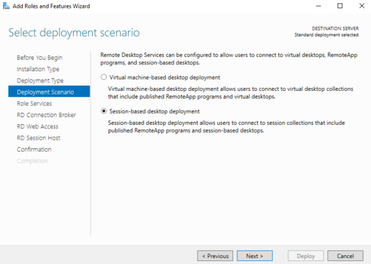
Follow the wizard without making any changes until you get to the RD Connection Broker tab. Specify the server intended for the RD Connection Broker server and click Next.
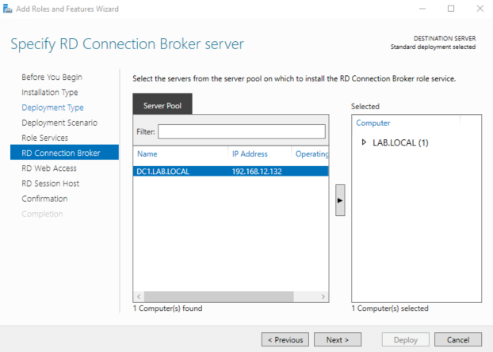
Specify the server intended for the RD Web Access server and click Next.
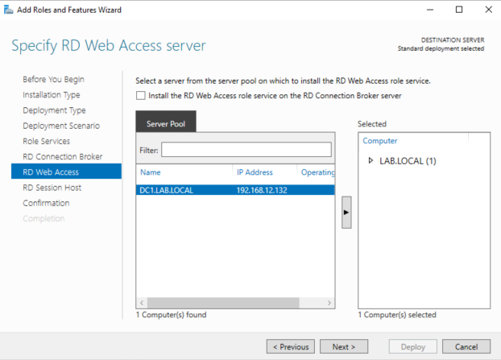
Specify the server intended for the RD Session Host server(s) and click Next.
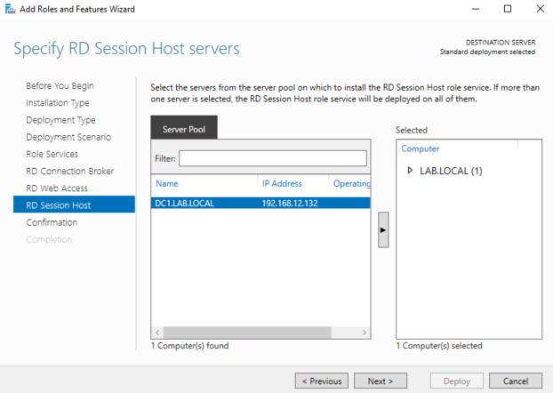
Review RDS role server selection, check the Restart the destination server automatically if required box, and click Deploy.
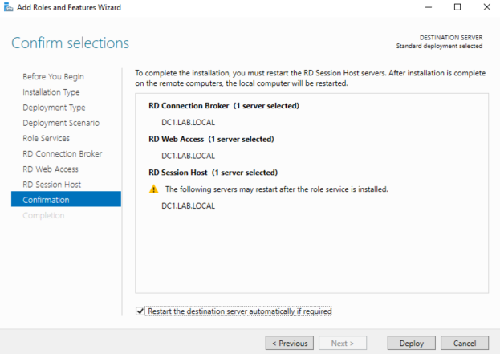
The RD role services installation begins, and about halfway through the server will automatically reboot. Once the server has rebooted, log-in with the same account used when the installation was first started, open Server Manager, and the installation dialogue window will resume.
Following completion of RDS role services installation, launch Server Manager and navigate to the RDS overview window, click on 3 Create session collections.
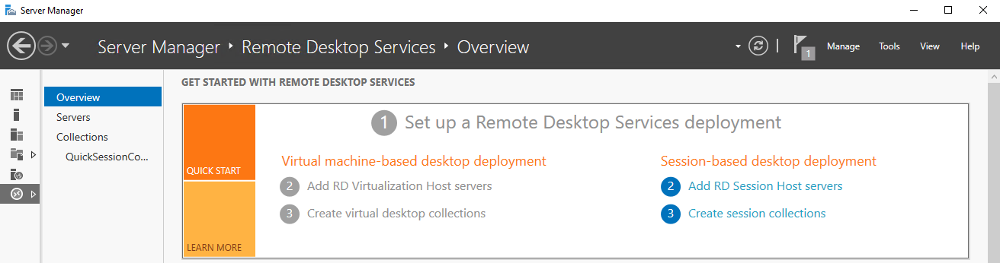
Follow the wizard until you get to the Collection Name tab. Enter a name, such as "NPS Applications", and click Next.
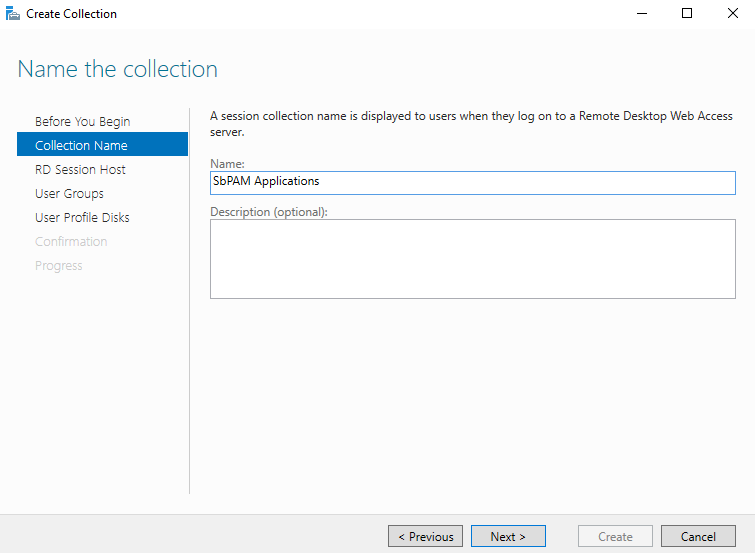
Specify the RD Session Host server (specified earlier during installation of the RD Session Host server role) and click Next.
Add the user groups who will access RemoteApps in the session collection. Click Next.
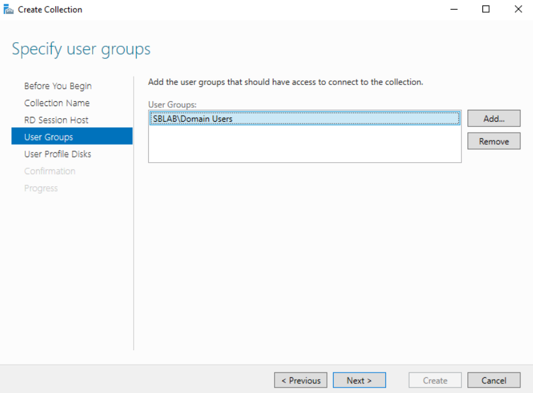
Optionally specify and enable user profile disks (not used in test environment to create this configuration guide). Review the defined session collection parameters and click Create. Once the session collection is created, you can close the Create Collection wizard.
In Server Manager navigate to the Remote Desktop Services Overview and note new session collection created under the RD Session Host icon.
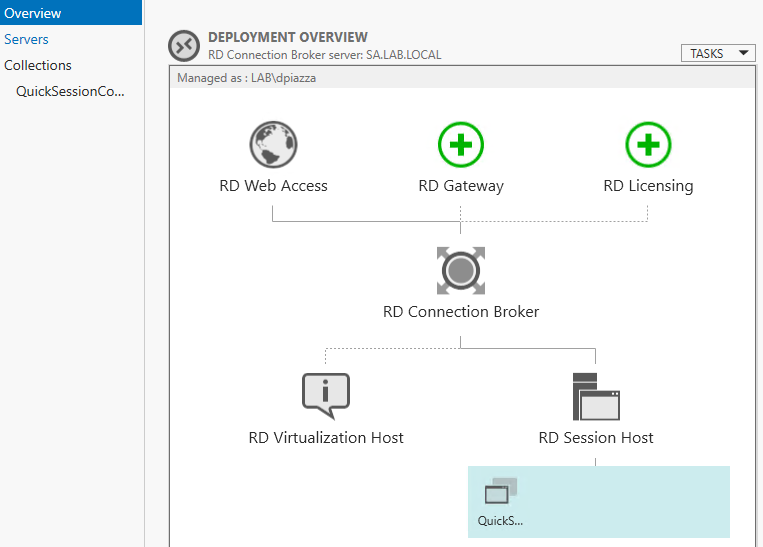
RemoteApps are published by navigating to the Collections tab of Server Manager and selecting Publish RemoteApp Programs from the Task menu.
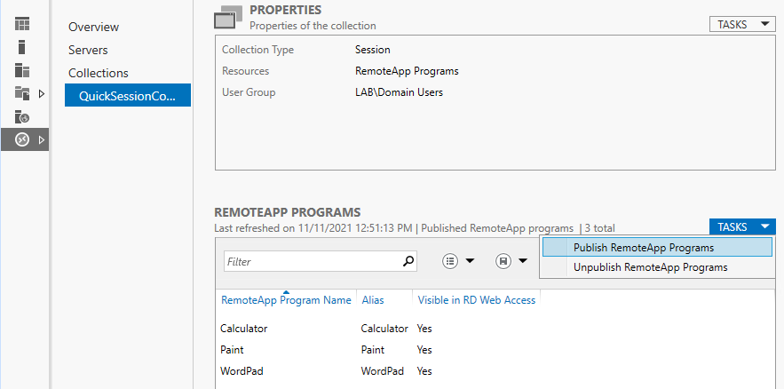
If the required application is listed, select it. For applications such as ADUC (in this example) you will need to specify the executable name and path. Click Add.
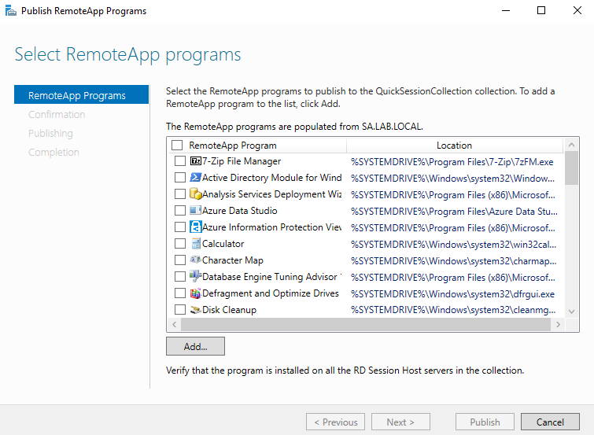
For ADUC, in this step we will add MMC (\\<rds_server>\c$\Windows\System32\mmc.exe).
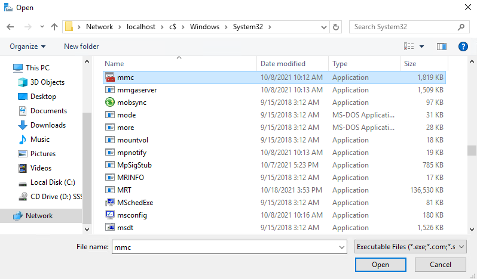
After adding all desired programs, click Next, click Publish, and then click Close.
In this next step, rename the RemoteApp and specify a parameter to launch ADUC. For additional security, it is possible to assign groups of users to RemoteApps. For example, you can assign the ADUC RemoteApp to an AD group called “RAUsers_ADUC”.
Right click the RemoteApp and select Edit Properties.
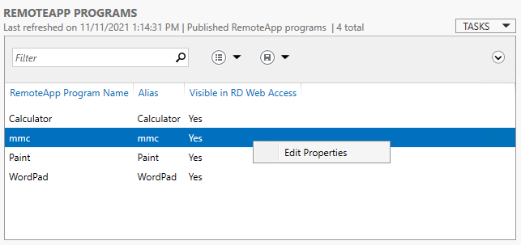
Edit the RemoteApp name and set it to "ADUC", then click the Parameters tab in the left sidebar.
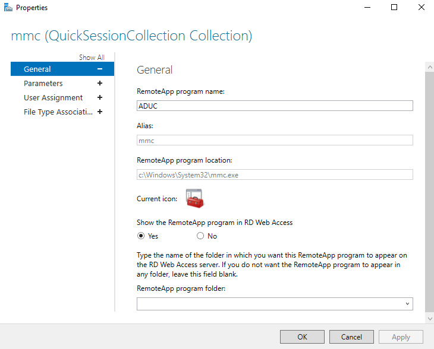
On the Parameters tab, select the Always use the following command-line parameters radio button. For the path use: dsa.msc
Click on the User Assignment tab in the left sidebar. Select the user access control group for the RemoteApp. In this case, specifying that users must be a member of the RAUsers_ADUC group to run the ADUC RemoteApp.
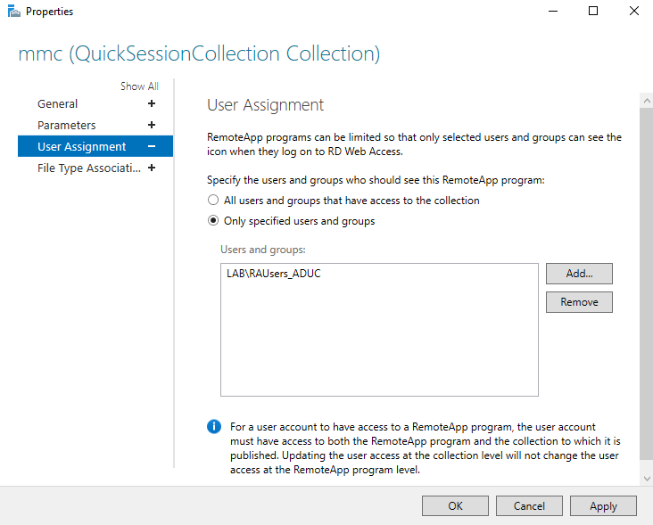
Click OK. Configuration of ADUC as a RemoteApp that can be accessed via a Privilege Secure activity is now complete. Next, there is necessary setup in a Privilege Secure activity.
Log-in to NPS as an Administrator. You will create an activity to execute the ADUC RemoteApp created earlier. Ensure Interactive App Launch is selected and the full application path to the RemoteApp on the RDS host is specified – but don't use the full path for MMC extensions such as dsa.msc.
For example: C:\Windows\System32\mmc.exe dsa.msc
IMPORTANT: Double check that the Application to Launch field exactly matches the application and parameter you published with the RemoteApp. Note that for the application value you should always use implicit drive/folder names i.e. use C:\Windows\ and NOT relative identifiers such as %SYSTEMROOT%.
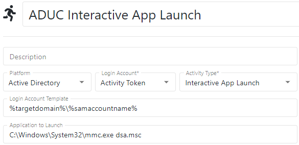
For this example, add the Login Account to the RAUsers_ADUC domain group specified for the RemoteApp by adding an Add User to Domain Group action to the activity's pre-session.
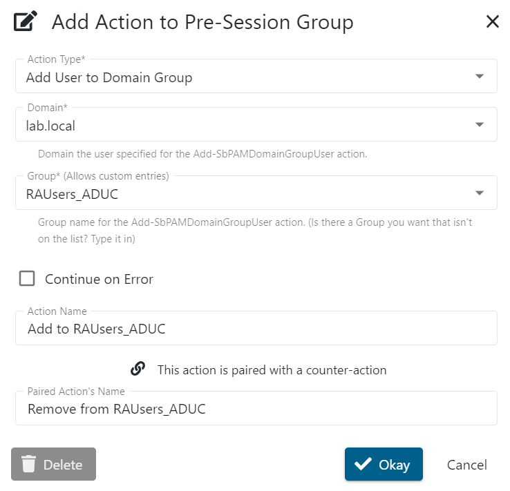
For temporary privilege elevation, you may also want to add a step to add the Login Account to Domain Admins.
Create an access policy in Privilege Secure that contains the recently created activity, the users who should have access to use it, and the Remote Desktop Services server resource. You can now provision this activity as any user granted privilege to use it.
When you connect to the Remote Desktop Services server, notice you only have access to the published RemoteApp (in this case, ADUC). The RDP session does not offer a full desktop environment, since this is just an Interactive App Launch for a specified program.
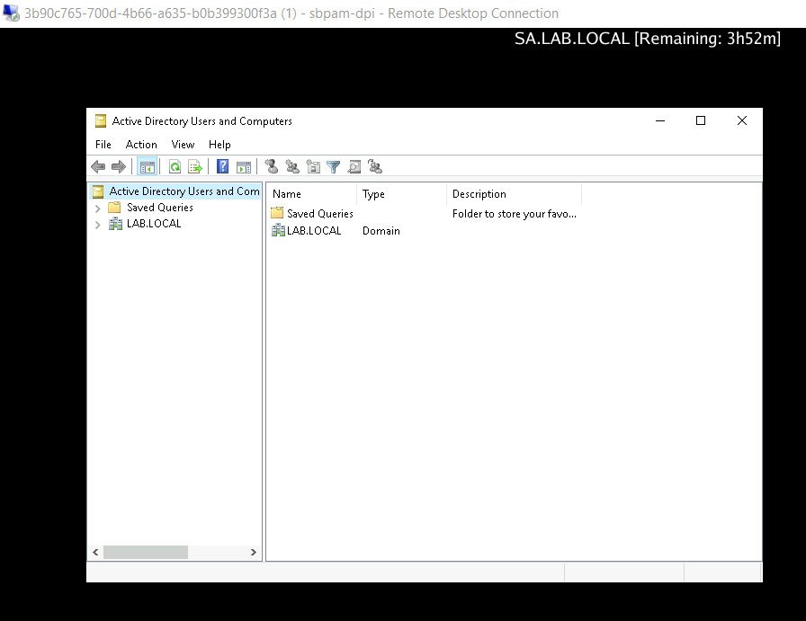